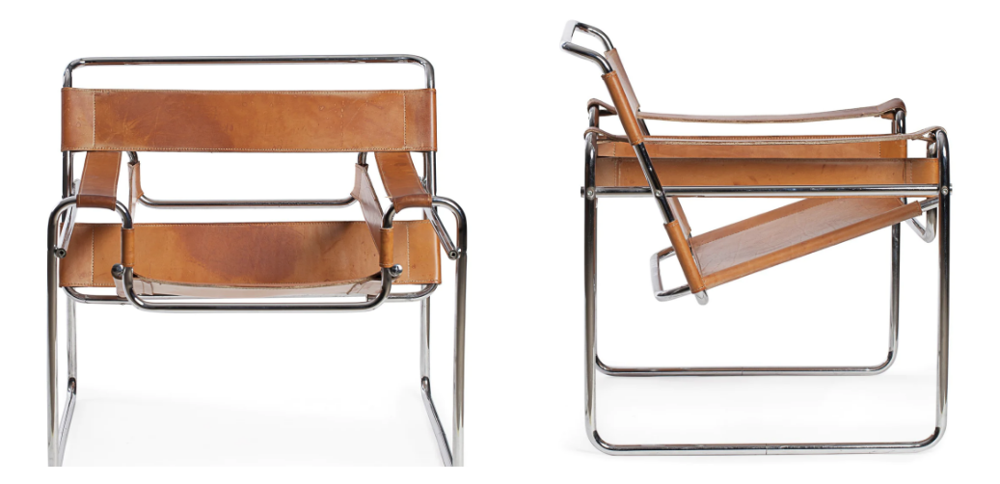
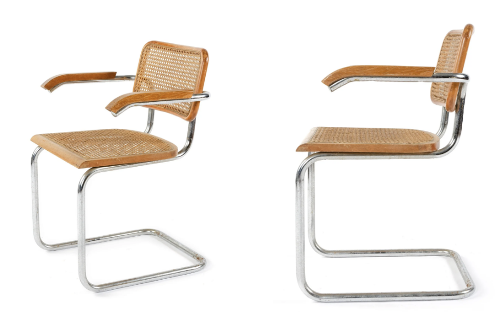
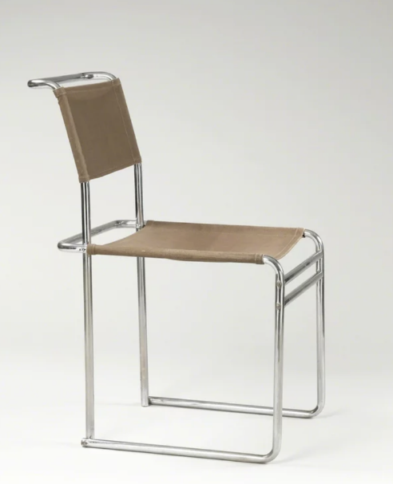
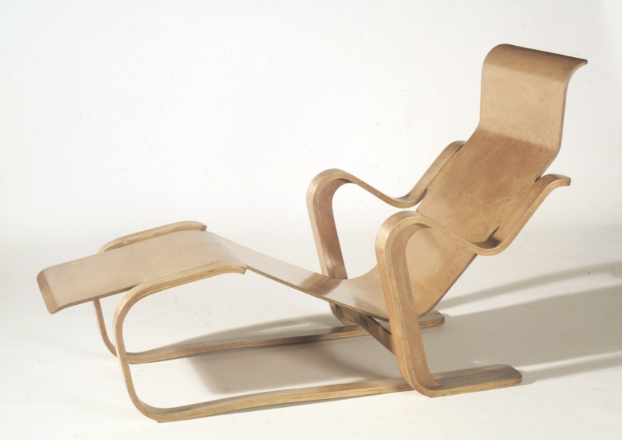
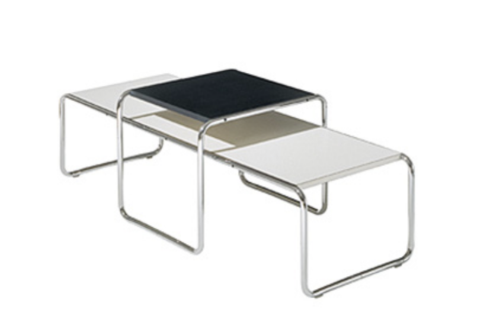
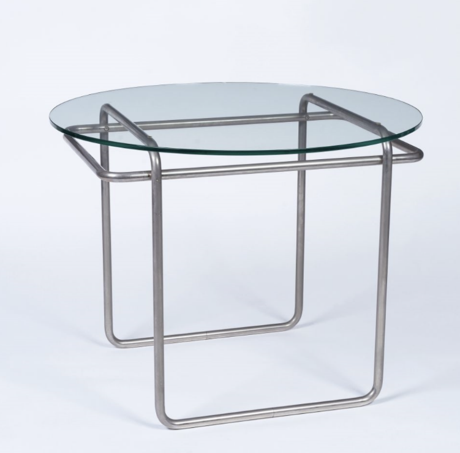

furniture collection
20세기 모더니즘 디자인을 이끈 마르셀 브로이어의 제품을 확인하실 수 있습니다.
Wassily Chair
Marcel Breuer / 1960

Cesca Chair
Marcel Breuer / 1928

B5
Marcel Breuer / 1926

Isokon Long Chair
Marcel Breuer / 1935

Lazio Table
Marcel Breuer / 1927

K40 Sofa Table
Marcel Breuer / 1927
